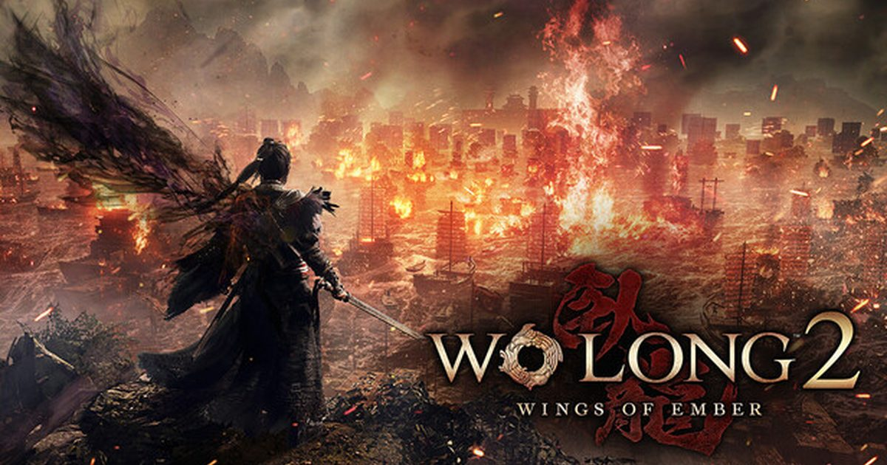

2026-09-18 · 动作 RPG 深读
9 月 16 日，光荣特库摩甩出定档：《Wo Long 2: Wings of Ember》（卧龙2：凤火连天）将于 2027 年 3 月 4 日登陆 PS5、Xbox Series、Switch 2 与 PC，并且首发加入 Xbox Game Pass Ultimate。前作《卧龙：苍天陨落》全球玩家已破 800 万，这次 Team Ninja 干的最狠的一件事，不是加了把双节棍，而是把前作那套"一本道线性关卡"一把火烧成了"动态演化的开放战场"。至于忍组能不能借 Game Pass 首发，跳过自己"首发优化灾难"的老剧本——这才是真正值得盯的点。

卧龙1 的问题，老玩家都门儿清：底子是好底子——"化解"那个毫秒级博弈的爽点，是忍组从《仁王》手里打磨出来的真功夫；但它被线性关卡、首发优化稀烂、难度曲线精神分裂三座大山压着，很多人连第一张图都没熬过去就弃了。所以这次定档最该被记住的，不是"2027.3.4"这个日期，也不是"首发进 GP"这个订阅制动作，而是官方明说的那句：彻底舍弃前作线性关卡，改用"动态演化的开放战场"。
换句话说，Team Ninja 没打算做个"卧龙1 加长版"。它想做的，是把"化解动作"塞进一个会自己呼吸的沙盘里。这一个转身，比任何预告片都更能说明它想撬动的市场。
① 局部战斗的胜负，会实时改写地图。 你在一处据点打赢或打输，周边地形、据点归属、势力分布都会跟着变；士气插旗系统保留，但改成了区域化机制——攻占据点或摧毁敌方军旗，直接改变那一片的士气。你不再被强制按一条固定路线推图，挑战顺序自己定。这是把"关卡设计"交给"战斗结果"的一次放权。
② 新增"军略"武将配置机制。 配合开放战场，你能像排兵布阵一样配置武将，把策略层从"单人闪反"拉到了"战场调度"。对一款动作 RPG 来说，这是往"战棋化"迈的一步，风险在于会不会让手感变碎。
③ 故事落到赤壁，主角身怀"凤凰之力"。 东汉末年，主角与挚友庞统的村落遭曹军蹂躏，两人助刘备抗曹，最终孙刘合流，赤壁一触即发。诸葛亮、黄月英将在主线登场。从预告看，暗黑三国美术风格延续前作，"凤火连天"的标题也点出了凤凰之力的戏份。
④ 新武器双节棍，"化身李小龙"。 外媒试玩里双节棍被形容成"fights like Bruce Lee"，配合立体机动与"空中奇术"，战斗选择明显比前作更花。α 体验版已经上线（开放至 9/30）：长坂开放区、角色创建器、最多 3 人在线，通关送正式版装备"凤雏兜鍪"。
⑤ 定价与订阅。 Steam 国区标准 ¥298 / 豪华 ¥418；PS5 港版标准 HK$528 / 豪华 HK$738；首发进 Game Pass Ultimate，支持 Xbox Play Anywhere。也就是说，订阅党 2027.3.4 当天零成本就能玩到。
和前作 Wo Long 1 比： 1 代被骂"首发优化灾难 + 难度曲线精神分裂"，2 代押注开放战场 + Game Pass 首发，等于用订阅制把"先试再买"的门槛降到零，也用 service 逻辑摊薄了首发差评的杀伤力。你没买也先玩上了，差评的愤怒会天然打折——这是商业层面的精明。
和 Nioh / Rise of the Ronin 比： 同出忍组，"化解"核心保留，但战场尺度从"一本道"变成"沙盘"。Eurogamer 称它是"忍组集大成之作（magnum opus）"，TechRadar 在科隆展试玩后赞战斗"fast, stylish, satisfying"。不过"集大成"三个字，忍组每代都差一点——Nioh 2 封神前也挨过骂。
商业赌注： 全平台 + 订阅制，本质上改变了单机买断的收益逻辑。光荣这是在用卧龙当"XGP 入口"试水：先用订阅拉规模，再用季票（两弹 DLC，分别 2027.8 / 2027.10 前）和豪华版吃长线。成，则打开忍组作品的订阅化想象；败，则又是一次"叫好不叫座"的遗憾。
我们的评分：8.3 / 10（前瞻）。 加分给开放战场的野心、化解的底子、Game Pass 的零门槛；扣分只给两点——前作优化的阴影还没散，以及 2027 才上、变数太大。它在"让人期待"这件事上，比卧龙1 定档时诚实得多。
我们的观察： 忍组近年的节奏几乎是固定的——"每代先挨骂，再靠补丁和口碑封神"。卧龙2 想跳过挨骂阶段，靠的不是改命，而是把试错成本转嫁给了订阅制和 α 体验版。这套打法，聪明。
我们的观点： 别把"开放战场"当成万能药。卧龙的灵魂始终落在那一帧闪反的毫秒博弈上，战场再大、武将再多，爽点还得回到"化解"的那一下。如果沙盘把节奏切碎，反而可能稀释掉它最值钱的东西。
我们的案例 / 对比： 和卧龙1（线性→沙盘，同样暗黑三国）、Nioh 2（忍组另一套化解公式，已封神）、Rise of the Ronin（同期开放世界动作）放一起看，卧龙2 的差异化只有一条——"把化解动作放进会呼吸的战场"。成不成，看它能不能让沙盘服务于闪反，而不是反过来。
我们的实验（给不同玩家的行动清单）： ① 想先试 → 现在下 α 版打长坂，9/30 前免费，通关拿"凤雏兜鍪"；② Xbox / PC 订阅党 → 2027.3.4 首发进 GP，零成本首玩；③ 被 1 代优化劝退的 → 等发售后实机评测再决定，别凭预告冲；④ 只主机的 → PS5 / NS2 同步，重点看移植稳不稳；⑤ 追剧情的 → 先补 1 代或复习赤壁背景，新作人物关系更密。
《卧龙2：凤火连天》不是"更长的卧龙1"，是忍组把战场摊开、把门槛拆掉的一次重赌。它用 Game Pass 首发和 α 体验版，提前把"先试后买"写进了发行逻辑；用动态战场，赌自己能把"化解"从走廊搬进沙盘还不散架。成不成，2027.3.4 那天，赤壁的火会给出答案。
资讯来源：光荣特库摩 / Team Ninja 官方公告、IT之家 / 游侠网 / 百度百科词条、Eurogamer 与 TechRadar 科隆展试玩前瞻、Steam 商店页。本站为导航聚合站，外链均指向官方 / 平台站点，内容仅供交流学习。